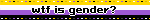
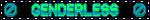
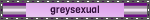
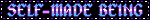

I am an AGENDER critter. I don't strongly relate to either gender, and instead of occupying a middle ground I prefer to appear GENDERLESS. This is something that had ITCHED in the back of my head as long as I can remember, and I am incredibly PROUD to have found MYSELF. I have been on SPIROLACTONE since NOVEMBER 2023, and ESTROGEN since APRIL 2024! I hope to have bottom surgery, particularly a NERVE PRESERVING NULLIFICATION in FALL 2026!
I am also PANSEXUAL! I am attracted, primarly romantically, but also sexually, to ALL GENDERS. However, I am GREY ASEXUAL as well. I rarely experience SEXUAL ATTRACTION, but when I do it is regardless of my FAMILIARITY with someone.